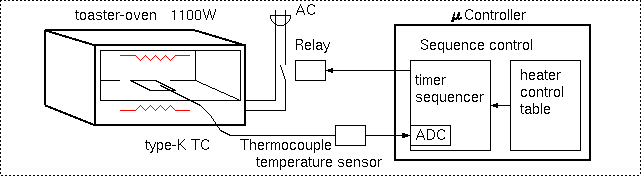
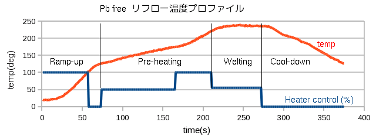

実装
mm-6/ハードウェア
実装
256-ball BGA のFPGAをプリント基板に実装するのは容易ではありません。業者に実装をお願いしようとしましたが、かなり高額な見積りになりました。また、BGAのリペアーを安価に行う業者もありますが個人では相手にしてくれないようです。
最近 Web でオーブントースターを使ったリフロー実装の例を見かけますので、さっそくトライすることにしました。
オーブントースターは安価なものが入手できます。熱電対温度計は秋月のキットを購入。コントローラーには日経エレキ付録のマイコンボードを利用しました。

リフローの手順
- 温度プロファイルを作る
- コントローラーでシーケンス制御プログラムを作成(フィードバック制御は遅延が大きすぎてムリ)
- 2秒周期程度のPWM制御でヒーターのパワーを設定
- 測定温度が設定値になるまで、もしくは設定時間経過するまでヒーターパワー投入
- 温度、経過時間、ヒーターパワーをテーブル化し、シーケンス制御
- 予備基板を用いて予行演習を繰り返し、シーケンステーブル調整。温度プロファイルを作る
- プロファイルはFPGAメーカーの推奨条件(Xilinx社資料 xapp427.pdf)に合わせた。鉛フリーなので高温。
- 基板の蓄熱はかなり大きく、実装対象の基板を用いて試す必要がある
- 熱電対はFPGAの近くのスルーホールに付けた。カプトン等耐熱テープがあると便利
- コントローラーでシーケンス制御プログラムを作成(フィードバック制御は遅延が大きすぎてムリ)
- 基板にFPGAをマウント
- 基板のFPGA部とBGAのボール部分にフラックスを塗布(メタルマスクでクリームはんだ塗布は素人には難しそう。基板のはんだフラッシュとBGAのはんだボールでOK)
- FPGAを基板に乗せてルーペで見ながらアライメント。基板にアライメント用のマークをつけておくのが重要。
- リフロー実装
- オーブンに基板をセットしてリフロー開始。
- Welting領域に入ったら、基板を割り箸でコンコンたたいて全ピン接続を願う。(効果は不明だが、2枚実装して2枚とも問題無かった)
- オーブンに基板をセットしてリフロー開始。
下図は実際にmm-6の基板を実装した時の温度プロファイルです。
mm-6 基板の実装は、1回目 FPGAを Pbフリーのプロファイルで実装し、次に残った部品を表面、裏面とものせてもう1度共晶はんだ用プロファイルでリフローしました。
SOP類はランドに予備はんだし、部品をのせて固定のため2ピンほど仮づけし、フラックス塗布。CR類は手はんだですが、リフローでアライメントされるので気楽に付けられました。
部品の中で1.2V DC/DCコンバータIC(ST1S06PU12R)はDFNパッケージではんだボールの無いCSPです。これを基板側の予備はんだでリフローしたところ失敗(端子open)。IC側に予備はんだを行って再度リフローしたところ無事接続できました。
今回簡易な装置でのリフロー実装にトライし、DFNのやり直しはあったものの、2/2枚の実装に成功しました。
再現性の良いプロファイルを作って、手順を守って作業をすることで、確実な実装ができる感触が得られました。SOP/QFPなど手はんだ可能な部品もリフローが楽です。